极客时间-数据结构与算法
前言
本篇主要记录王争老师在极客时间算法课程中主要提到的核心要点。
课程纪实
复杂度分析方法
用课程中提到的一句话：复杂度分析是整个算法学习的精髓，只要掌握了它，数据结构和算法的内容基本上就掌握了一半。
如何分析与统计算法的执行效率和资源消耗
为什么需要复杂度分析？
- 测试结果非常依赖测试环境：不同的硬件环境，测试的结果自然不同
- 测试结果受数据规模的影响很大
因此需要一种不用具体的测试数据来测试，就可以粗略地估计算法的执行效率的方法。
大O复杂度表示法
公式可以表示为：
大 O 时间复杂度实际上并不具体表示代码真正的执行时间，而是表示代码执行时间随数据规模增长的变化趋势，所以，也叫作渐进时间复杂度(asymptotic time complexity)，简称时间复杂度。
时间复杂度分析
只关注循环执行次数最多的一段代码
我们在分析一个算法、一段代码的时间复杂度的时候，也只关注循环执行次数最多的那一段代码就可以了
加法法则:总复杂度等于量级最大的那段代码的复杂度
总的时间复杂度就等于量级最大的那段代码的时间复杂度乘法法则:嵌套代码的复杂度等于嵌套内外代码复杂度的乘积
落实到具体的代码上,我们可以把乘法法则看成是嵌套循环

几种常见时间复杂度实例分析
常见的复杂度量级图解:
- 多项式量级
- O(1)
- O(logn)、O(nlogn)
- O(m+n)、O(m*n)
- 非多项式量级
几种时间复杂度增长关系
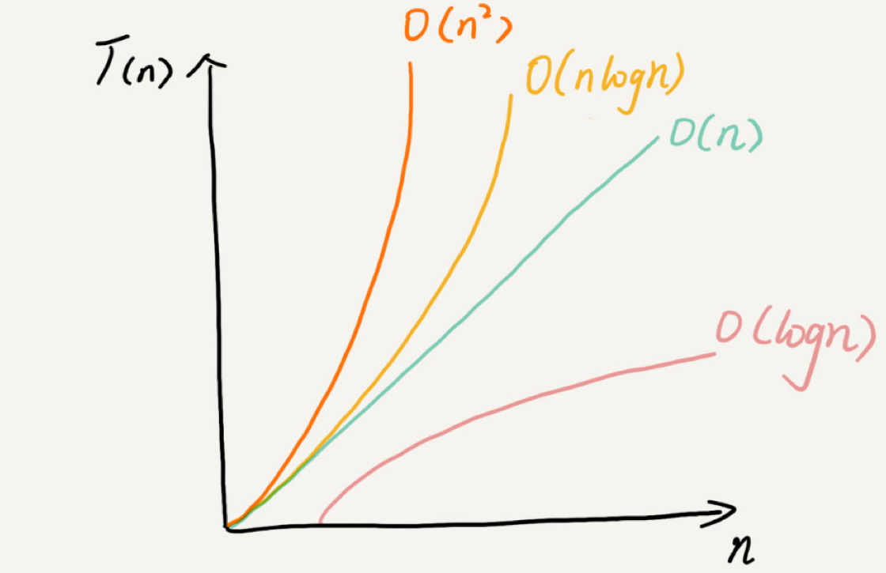
空间复杂度分析
时间复杂度的全称是渐进时间复杂度,表示算法的执行时间与数据规模之间的增长关系。类比一下，空间复杂度全称就是渐进空间复杂度(asymptotic space complexity)，表示算法的存储空间与数据规模之间的增长关系。
浅析最好、最坏、平均、均摊时间复杂度
最好情况
最好情况时间复杂度就是：在 最理想 的情况下，执行这段代码的时间复杂度
最快情况
最坏情况时间复杂度就是：在 最糟糕 的情况下，执行这段代码的时间复杂度
平均情况
这是一个简单的概率论中的知识
均摊时间
常见几种基本数据结构
数据结构和算法的魅力就在于此，很多时候我们并不是要去死记硬背某个数据结构或者算法，而是要学习它背后的思想和处理技巧，这些东西才是最有价值的。
如果你细心留意，不管是在软件开发还是架构设计中，总能找到某些算法和数据结构的影子。
数组
解释：数组(Array)是一种线性表数据结构。它用一组连续的内存空间,来存储一组具有相同类型的数据。
线性表(Linear List)

非线性表
之所以叫非线性,是因为,在非线性表中,数据之间并不是简单的前后关系。
连续的内存空间和相同类型的数据
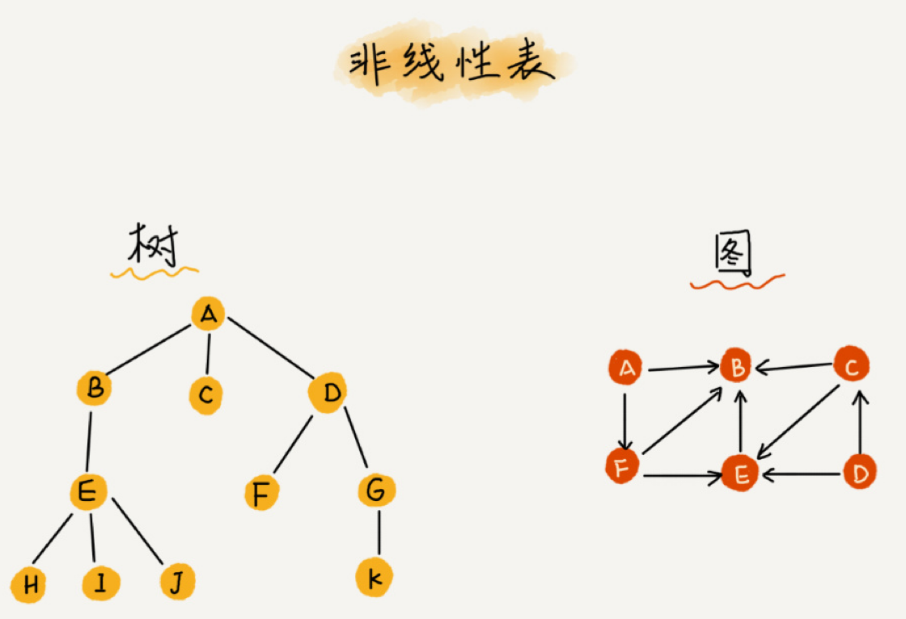
常常会问数组和链表的区别
“链表适合插入、删除,时间复杂度 O(1);数组适合查找,查找时间复杂度为O(1)”。
正确的表述应该是,数组支持随机访问,根据下标随机访问的时间复杂度为 O(1)。
数组特点
低效的“插入”和“删除”
插入
如果在数组的末尾插入元素,那就不需要移动数据了,这时的时间复杂度为 O(1)。但如果在数组的开头插入元素,那所有的数据都需要依次往后移动一位,所以最坏时间复杂度是O(n)。 因为我们在每个位置插入元素的概率是一样的,所以平均情况时间复杂度为 (1+2+ …n)/n=O(n)。
删除
如果删除数组末尾的数据,则最好情况时间复杂度为 O(1);如果删除开头的数据,则最坏情况时间复杂度为 O(n);平均情况时间复杂度也为 O(n)。
几点经验
- ava ArrayList 无法存储基本类型,比如 int、long,需要封装为 Integer、Long 类,而Autoboxing、Unboxing 则有一定的性能消耗,所以如果特别关注性能,或者希望使用基本类型,就可以选用数组。
- 如果数据大小事先已知,并且对数据的操作非常简单,用不到 ArrayList 提供的大部分方法,也可以直接使用数组。
- 还有一个是我个人的喜好,当要表示多维数组时,用数组往往会更加直观。比如Object[][] array;而用容器的话则需要这样定义:ArrayList
array。
开篇答疑
为什么大多数编程语言中,数组要从 0 开始编号,而不是从1 开始呢?
正常的寻址公式这样的：
如果数组从1开始计数，那么寻址公式就是下面这样的
此时很明显，计算机计算的步骤要比从0开始多计算，因而需要消耗更多的计算资源
链表
先进先出策略 FIFO(First In,First Out)、最少使用策略 LFU(Least Frequently Used)、最近最少使用策略 LRU(Least Recently Used)。
数组需要一块连续的内存空间，而链表恰恰相反
链表分类
单链表、双向链表和循环链表
单链表
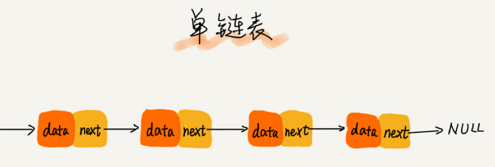
注意：第一个结点叫作头结点、最后一个结点叫作尾结点。
循环链表和双向链表
单链表的尾结点指针指向空地址,表示这就是最后的结点了。而循环链表的尾结点指针是指向链表的头结点
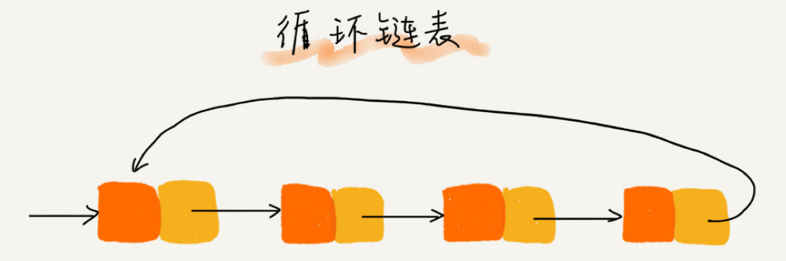
双向链表,顾名思义,它支持两个方向,每个结点不止有一个后继指针 next 指向后面的结点,还有一个前驱指针 prev 指向前面的结点。
根据要查找的值与 p 的大小关系,决定是往前还是往后查找,所以平均只需要查找一半的数据。
双向循环链表
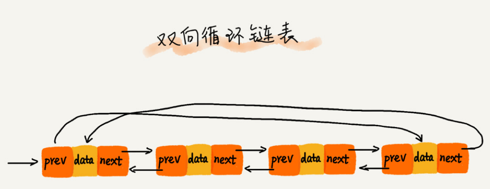
用空间换时间
当内存空间充足的时候,如果我们更加追求代码的执行速度,我们就可以选择空间复杂度相对较高、但时间复杂度相对很低的算法或者数据结构
如果内存比较紧缺,比如代码跑在手机或者单片机上,这个时候,就要反过来用时间换空间的设计思路。
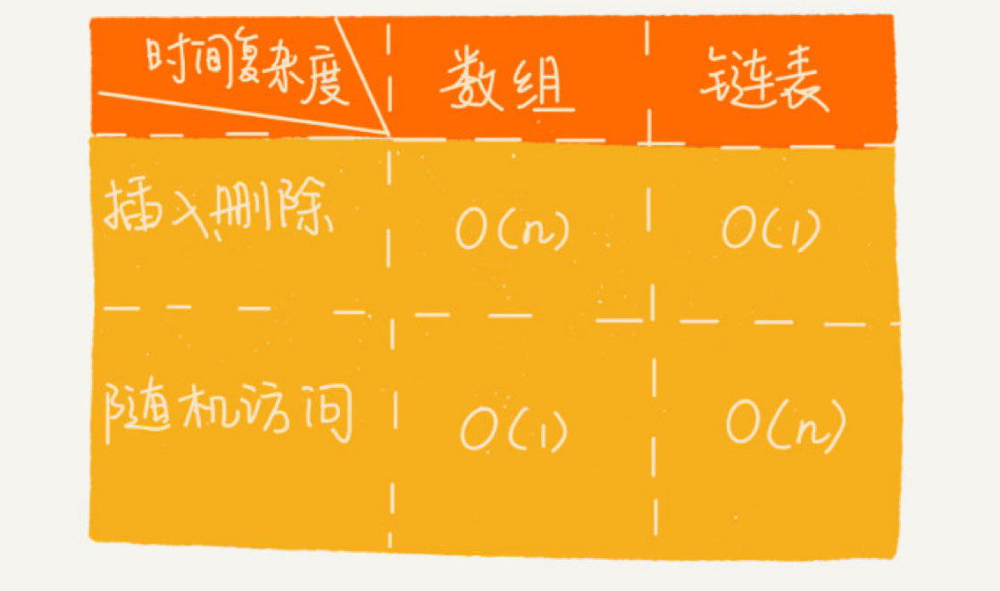
开篇答疑（一）
如何基于链表实现 LRU 缓存淘汰算法?
- 如果此数据之前已经被缓存在链表中了,我们遍历得到这个数据对应的结点,并将其从原来的位置删除,然后再插入到链表的头部。
- 如果此数据没有在缓存链表中,又可以分为两种情况
- 如果此时缓存未满,则将此结点直接插入到链表的头部;
- 如果此时缓存已满,则链表尾结点删除,将新的数据结点插入链表的头部。
当然也可以用数组来完成这个判断过程
如何轻松写出正确的链表代码？
技巧一:理解指针或引用的含义
没啥好说的，如果是通过C/C++来实现，需要注意
技巧二:警惕指针丢失和内存泄漏
一个典型错误示例：
正确的示例片段：
1 | p->next = x; // 将p的next指针指向x结点 |
删除链表结点时,也一定要记得手动释放内存空间
技巧三:利用哨兵简化实现难度
在任何时候,不管链表是不是空,head 指针都会一直指向这个哨兵结点。我们也把这种有哨兵结点的链表叫带头链表。相反,没有哨兵结点的链表就叫作不带头链表。
这种利用哨兵简化编程难度的技巧,在很多代码实现中都有用到,比如插入排序、归并排序、动态规划等
技巧四:重点留意边界条件处理
- 如果链表为空时,代码是否能正常工作?
- 如果链表只包含一个结点时,代码是否能正常工作?
- 如果链表只包含两个结点时,代码是否能正常工作?
- 代码逻辑在处理头结点和尾结点的时候,是否能正常工作?
技巧五:举例画图,辅助思考
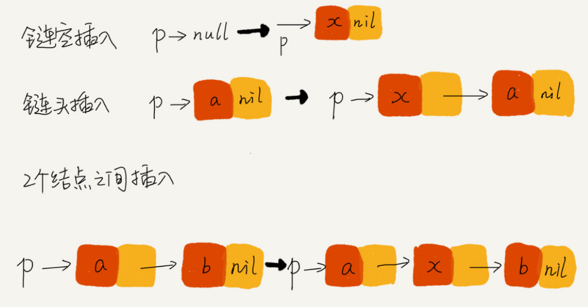
技巧六:多写多练,没有捷径
几个核心要点：
- 单链表反转
- 链表中环的检测
- 两个有序的链表合并
- 删除链表倒数第n个节点
- 求链表的中间节点
栈
栈是一种“操作受限”的线性表,只允许在一端插入和删除数据
当某个数据集合只涉及在一端插入和删除数据,并且满足后进先出、先进后出的特性,我们就应该首选“栈”这种数据结构。
如何实现一个栈？
顺序栈
用数组实现的栈,我们叫作顺序栈，支持动态扩容的顺序栈
来看下面的思考：
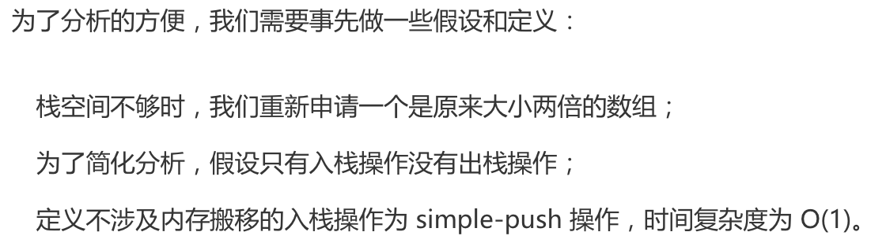
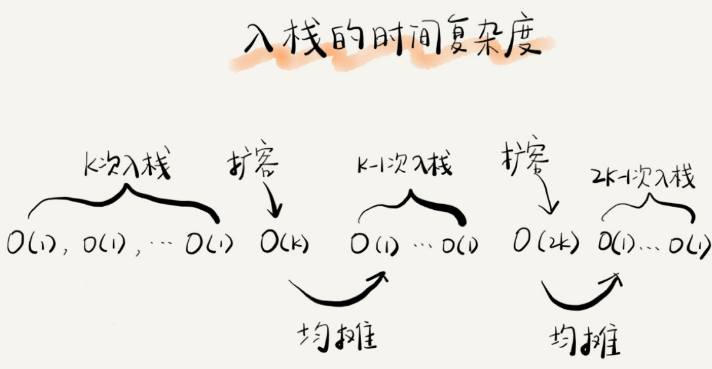
链式栈
顾名思义，用链表来实现的
栈在函数调用中的应用
操作系统给每个线程分配了一块独立的内存空间,这块内存被组织成“栈”这种结构, 用来存储函数调用时的临时变量。每进入一个函数,就会将临时变量作为一个栈帧入栈,当被调用函数执行完成,返回之后,将这个函数对应的栈帧出栈。
栈在表达式求值中的应用
栈在括号匹配中的应用
队列
如何理解“队列”?
入队 enqueue(),放一个数据到队列尾部;出队 dequeue(),从队列头部取一个元素。
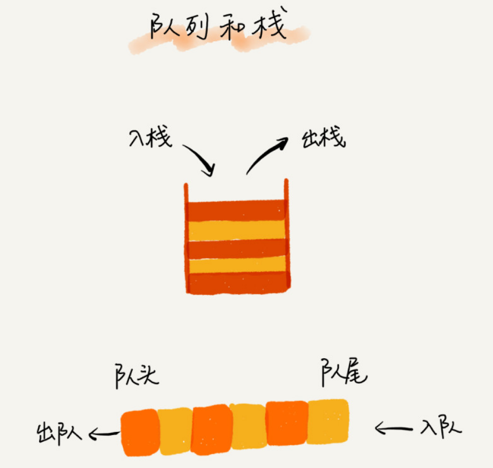
循环队列
阻塞队列和并发队列
阻塞队列
阻塞队列其实就是在队列基础上增加了阻塞操作
在队列为空的时候,从队头取数据会被阻塞。因为此时还没有数据可取,直到队列中有了数据才能返回;如果队列已经满了,那么插入数据的操作就会被阻塞,直到队列中有空闲位置后再插入数据,然后再返回。
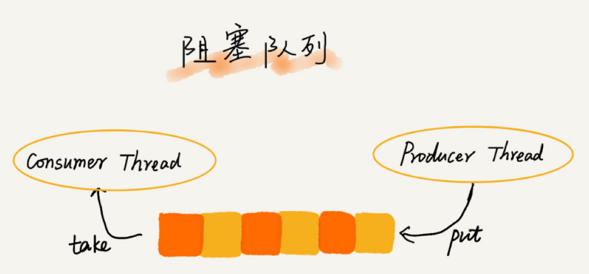
并发队列
最简单直接的实现方式是直接在 enqueue()、dequeue() 方法上加锁,但是锁粒度大并发度会比较低,同一时刻仅允许一个存或者取操作。实际上,基于数组的循环队列,利用 CAS 原子操作,可以实现非常高效的并发队列
开篇答疑
线程池没有空闲线程时,新的任务请求线程资源时,线程池该如何处理?各种处理策略又是如何实现的呢?
- 是非阻塞的处理方式,直接拒绝任务请求;
- 阻塞的处理方式,将请求排队,等到有空闲线程时,取出排队的请求继续处理
- 基于链表
基于链表的实现方式,可以实现一个支持无限排队的无界队列(unbounded queue),但是可能会导致过多的请求排队等待,请求处理的响应时间过长。所以,针对响应时间比较敏感的系统,基于链表实现的无限排队的线程池是不合适的。 - 基于数组
而基于数组实现的有界队列(bounded queue),队列的大小有限,所以线程池中排队的请求超过队列大小时,接下来的请求就会被拒绝,这种方式对响应时间敏感的系统来说,就相对更加合理。不过,设置一个合理的队列大小,也是非常有讲究的。队列太大导致等待的请求太多,队列太小会导致无法充分利用系统资源、发挥最大性能。
基础排序
各基础排序时间复杂度比较
如何分析一个“排序算法”?
排序算法的执行效率
- 最好情况、最坏情况、平均情况时间复杂度
- 分别给出最好情况、最坏情况、平均情况下的时间复杂度。除此之外,你还要说出最好、最坏时间复杂度对应的要排序的原始数据是什么样的。
- 为什么要区分这三种时间复杂度呢?第一,有些排序算法会区分,为了好对比,所以我们最好都做一下区分。第二,对于要排序的数据,有的接近有序,有的完全无序。有序度不同的数据,对于排序的执行时间肯定是有影响的,我们要知道排序算法在不同数据下的性能表现。
时间复杂度的系数、常数 、低阶
对同一阶时间复杂度的排序算法性能对比的时候, 我们就要把系数、常数、低阶也考虑进来。
比较次数和交换(或移动)次数
基于比较的排序算法的执行过程,会涉及两种操作,一种是元素比较大小,另一种是元素交换或移动。所以,如果我们在分析排序算法的执行效率的时候,应该把比较次数和交换(或移动)次数也考虑进去。
排序算法的内存消耗
算法的内存消耗可以通过空间复杂度来衡量,排序算法也不例外。不过,针对排序算法的空间复杂度,我们还引入了一个新的概念,原地排序(Sorted in place)。
原地排序算法,就是特指空间复杂度是 O(1) 的排序算法。我们今天讲的三种排序算法,都是原地排序算法。
排序算法的稳定性
稳定性。这个概念是说,如果待排序的序列中存在值相等的元素,经过排序之后,相等元素之间原有的先后顺序不变。
稳定排序算法可以保持金额相同的两个对象,在排序之后的前后顺序不变
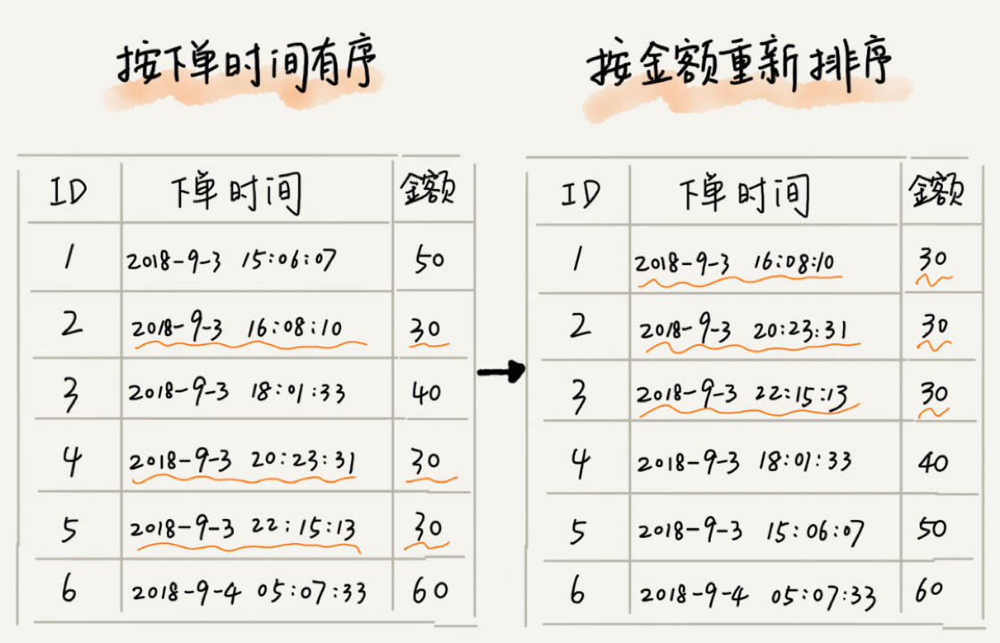
冒泡排序(Bubble Sort)
冒泡排序只会操作相邻的两个数据。每次冒泡操作都会对相邻的两个元素进行比较,看是否满足大小关系要求。如果不满足就让它俩互换。一次冒泡会让至少一个元素移动到它应该在的位置,重复 n 次,就完成了 n 个数据的排序工作。
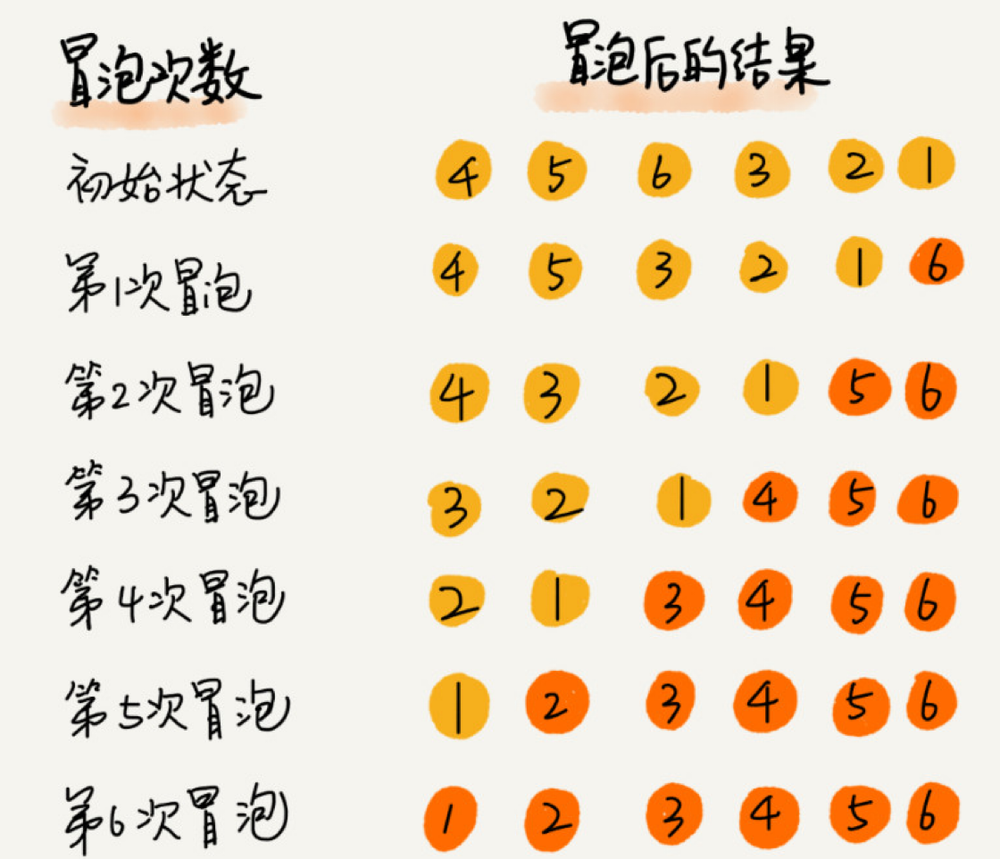
几点关于冒泡排序的思考
- 冒泡排序是原地排序算法吗?
冒泡的过程只涉及相邻数据的交换操作,只需要常量级的临时空间,所以它的空间复杂度为O(1),是一个原地排序算法。 - 冒泡排序是稳定的排序算法吗?
在冒泡排序中,只有交换才可以改变两个元素的前后顺序。
保证冒泡排序算法的稳定性,当有相邻的两个元素大小相等的时候,我们不做交换,相同大小的数据在排序前后不会改变顺序,所以冒泡排序是稳定的排序算法。 - 冒泡排序的时间复杂度是多少?
最好情况时间复杂度是 O(n)
最坏情况时间复杂度为 O(n)。
用概率论方法定量分析平均时间复杂度,涉及的数学推理和计算就会很复杂。
一种思路,通过“有序度”和“逆序度”这两个概念来进行分析。有关有序度与无序度的讨论
有序度是数组中具有有序关系的元素对的个数
例如：
对于一个倒序排列的数组,比如 6,5,4,3,2,1,有序度是 0;对于一个完全有序的数组,比如 1,2,3,4,5,6,有序度就是n*(n-1)/2,也就是 15。我们把这种完全有序的数组的有序度叫作满有序度。

一个公式:逆序度 = 满有序度 - 有序度。
拿前面举的那个冒泡排序的例子：
逆序度,也就是n*(n-1)/2–初始有序度。此例中就是 15–3=12,要进行 12 次交换操作。
对于包含 n 个数据的数组进行冒泡排序,平均交换次数是多少呢?最坏情况下,初始状态的有序度是 0,所以要进行 n*(n-1)/2 次交换。最好情况下,初始状态的有序度是 n*(n- 1)/2,就不需要进行交换。我们可以取个中间值 n*(n-1)/4,来表示初始有序度既不是很高也不是很低的平均情况。
平均情况下,需要 n*(n-1)/4 次交换操作,比较操作肯定要比交换操作多,而复杂度的上限是 O(n ),所以平均情况下的时间复杂度就是 O(n )。
插入排序(Insertion Sort)
一个有序的数组,我们往里面添加一个新的数据后,如何继续保持数据有序呢?
步骤拆解
我们将数组中的数据分为两个区间,已排序区间和未排序区间。
初始已排序区间只有一个元素,就是数组的第一个元素。
插入算法的核心思想是取未排序区间中的元素,在已排序区间中找到合适的插入位置将其插入,并保证已排序区间数据一直有序。重复这个过程, 直到未排序区间中元素为空,算法结束。
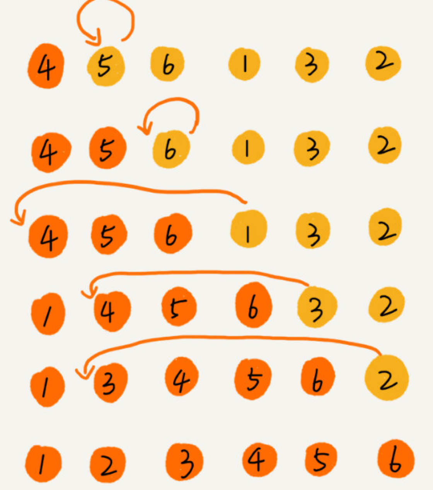
几点思考
- 插入排序是原地排序算法吗?
实现过程可以很明显地看出,插入排序算法的运行并不需要额外的存储空间,所以空间复杂度是 O(1),也就是说,这是一个原地排序算法。 - 插入排序是稳定的排序算法吗?
保持原有的前后顺序不变,所以插入排序是稳定的排序算法 - 插入排序的时间复杂度是多少?
每次插入都相当于在数组的第一个位置插入新的数据,所以需要移动大量的数据,所以最坏情况时间复杂度为 O(n )
选择排序(Selection Sort)
也分已排序区间和未排序区间。但是选择排序每次会从未排序区间中找到最小的元素,将其放到已排序区间的末尾。
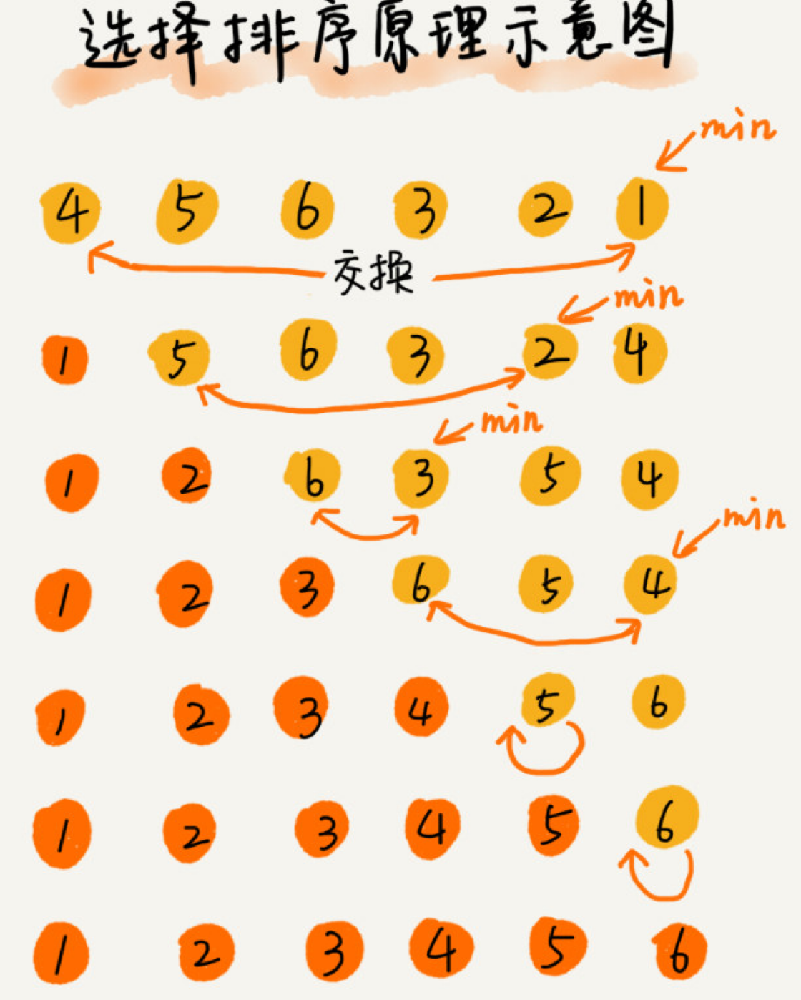
选择排序空间复杂度为 O(1),是一种原地排序算法。选择排序的最好情况时间复杂度、最坏情况和平均情况时间复杂度都为 O(n )
选择排序是一种不稳定的排序算法。
开篇答疑
冒泡排序和插入排序的时间复杂度都是O(n ),都是原地排序算法,为什么插入排序要比冒泡排序更受欢迎呢?
- 冒泡排序不管怎么优化,元素交换的次数是一个固定值,是原始数据的逆序度。
- 插入排序是同样的,不管怎么优化,元素移动的次数也等于原始数据的逆序度。
- 冒泡排序的数据交换要比插入排序的数据移动要复杂,冒泡排序需要 3 个赋值操作,而插入排序只需要 1 个。
- 插入排序的优化感兴趣,可以自行学习一下希尔排序
总结
对于小规模数据的排序,用起来非常高效。但是在大规模数据排序的时候,这个时间复杂度还是稍微有点高,所以我们更倾向于用下一节要讲的时间复杂度为 O(nlogn) 的排序算法。
如何用快排思想在O(n)内查找第K大元素？
两种时间复杂度为 O(nlogn) 的排序算法,归并排序和快速排序。这两种排序算法适合大规模的数据排序
我们选择数组区间 A[0…n-1] 的最后一个元素 A[n-1] 作为 pivot,对数组 A[0…n-1] 原地分区,这样数组就分成了三部分,A[0…p-1]、A[p]、A[p+1…n-1]。
如果 p+1=K,那 A[p] 就是要求解的元素;如果 K>p+1, 说明第 K 大元素出现在 A[p+1…n-1] 区间,我们再按照上面的思路递归地在 A[p+1…n-1] 这个区间内查找。同理,如果K < p+1,那我们就在 A[0…p-1] 区间查找。
归并排序
核心思想还是蛮简单的。如果要排序一个数组,我们先把数组从中间分成前后两部分,然后对前后两部分分别排序,再将排好序的两部分合并在一起,这样整个数组就都有序了。
分治是一种解决问题的处理思想,递归是一种编程技巧
1 | // 归并排序算法, A 是数组，n 表示数组大小 |
归并排序的性能分析
- 归并排序是稳定的排序算法吗?
归并排序稳不稳定关键要看merge() 函数,也就是两个有序子数组合并成一个有序数组的那部分代码 - 归并排序的时间复杂度是多少?
不仅递归求解的问题可以写成递推公式,递归代码的时间复杂度也可以写成递推公式。
如果我们定义求解问题 a 的时间是 T(a)，求解问题 b、c 的时间分别是 T(b) 和 T( c)，那我
们就可以得到这样的递推关系式：
T(a) = T(b) + T(c) + K
不仅递归求解的问题可以写成递推公式，递归代码的时间复杂度也可以写成递推公式。 - 第三,归并排序的空间复杂度是多少?
归并排序的时间复杂度任何情况下都是 O(nlogn)
有一个致命的“弱点”,那就是归并排序不是原地排序算法。
快速排序
如果要排序数组中下标从 p 到 r 之间的一组数据,我们选择 p 到 r 之间的任意一个数据作为 pivot(分区点)。
我们遍历 p 到 r 之间的数据,将小于 pivot 的放到左边,将大于 pivot 的放到右边,将pivot 放到中间。经过这一步骤之后,数组 p 到 r 之间的数据就被分成了三个部分,前面 p 到 q-1 之间都是小于 pivot 的,中间是 pivot,后面的 q+1 到 r 之间是大于 pivot 的。
根据分治、递归的处理思想，我们可以用递归排序下标从 p 到 q-1 之间的数据和下标从q+1 到 r 之间的数据，直到区间缩小为 1，就说明所有的数据都有序了。
递推公式：
quick_sort(p…r) = quick_sort(p…q-1) + quick_sort(q+1, r)
终止条件：
p >= r
用代码表示就如下所示：
1 | // 快速排序，A 是数组，n 表示数组的大小 |
快速排序之原地分区函数
伪代码如下：
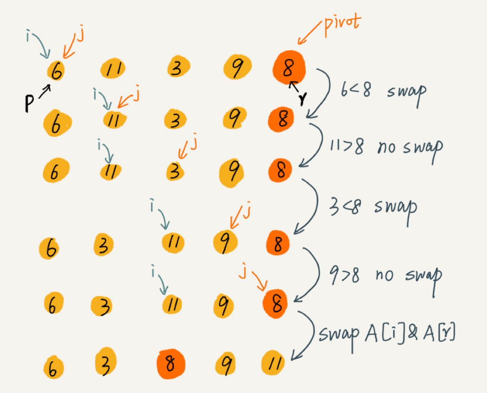
因为分区的过程涉及交换操作，如果数组中有两个相同的元素，比如序列 6，8，7，6，3，5，9，4，在经过第一次分区操作之后，两个 6 的相对先后顺序就会改变。所以，快速排序并不是一个稳定的排序算法
快排与归并的不同
快排和归并用的都是分治思想，递推公式和递归代码也非常相似，那它们的区别在哪里呢？
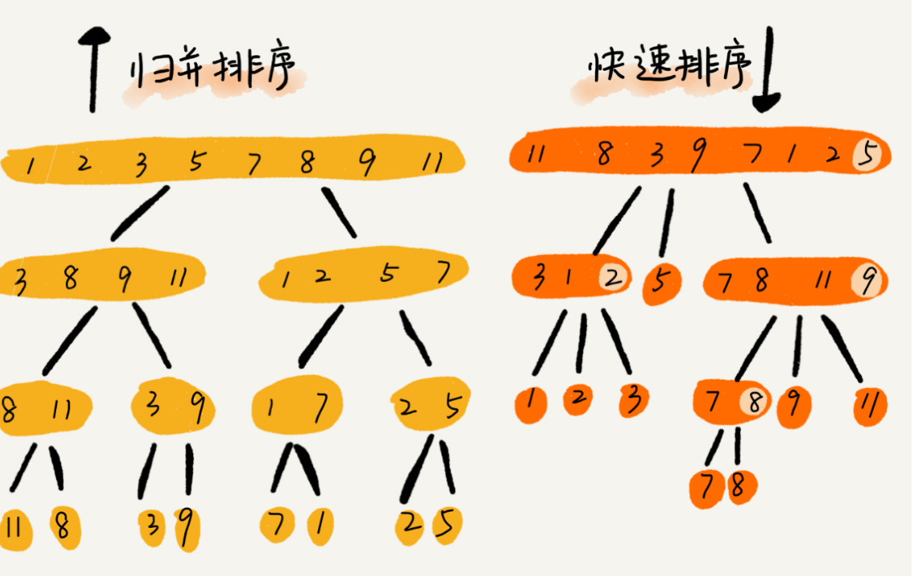
可以发现，归并排序的处理过程是由下到上的，先处理子问题，然后再合并。而快排正好相反，它的处理过程是由上到下的，先分区，然后再处理子问题。归并排序虽然是稳定的、时间复杂度为 O(nlogn) 的排序算法，但是它是非原地排序算法。我们前面讲过，归并之所以是非原地排序算法，主要原因是合并函数无法在原地执行。快速排序通过设计巧妙的原地分区函数，可以实现原地排序，解决了归并排序占用太多内存的问题。
线性排序
三种时间复杂度是O(n)的排序算法:桶排序、计数排序、基数排序。因为这些排序算法的时间复杂度是线性的,所以我们把这类排序算法叫作线性排序( Linear sort
桶排序
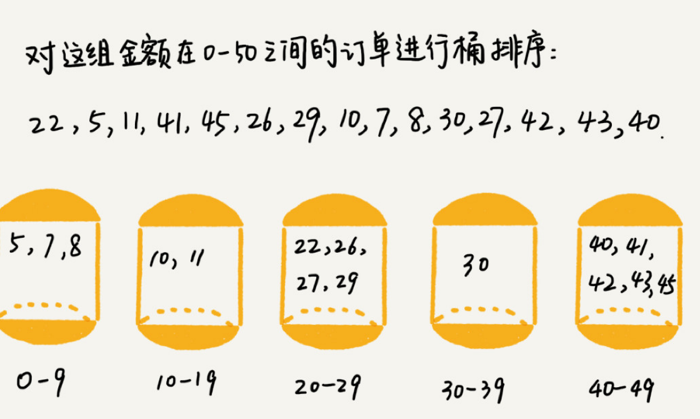
桶排序看起来很优秀,那它是不是可以替代我们之前讲的排序算法呢?
桶排序比较适合用在外部排序中。所谓的外部排序就是数据存储在外部磁盘中,数据量比较大,内存有限,无法将数据全部加載到内存中。
例如：
比如说我们有10GB的订单数据,我们希望按订单金额(假设金额都是正整数)进行排序,但是我们的内存有限,只有几百MB,没办法一次性把106B的数据都加载到内存中。这个时候该怎么办呢?
先扫描一遍文件,看订单金额所处的数据范围。假设经过扫描之后我们得到,订单金额最小是1元最大是10万元。我们将所有订单根据金额划分到100个桶里,第一个桶我们存储金额在1元到1000元之内的订单,第二桶存储金额在1001元到2000元之内的订单,以此类推。每一个桶对应一个文件,并且按照金额范围的大小顺序编号命名(00,01,0299)
如果订单金额在1到10万之间均匀分布,那订单会被均匀划分到100个文件中,每个小文件中存储大约100MB的订单数据,我们就可以将这100个小文件依次放到内存中,用快排来排序
但是订单按照金额在1元到10万元之间并不一定是均匀分布的:
如何借助桶排序的处理思想来解决这个问题。
可以先扫描一遍文件,看订单金额所处的数据范国。假设经过扫描之后我们得到; 最小是1元,最大是10万元。我们将所有订单根据金额划分到100个桶里,第门存储金额在1元到1000元之内的订单,第二桶存储金额在1001元到2000元单,以此类推。每一个桶对应一个文件,并且按照金额范围的大小顺序编号命名01,02.99)。
针对这些划分之后还是比较大的文件,我们可以继续划分,比如,订单金额在1元到1000 元之间的比较多,我们就将这个区间继续划分为10个小区间,1元到100元,101元到200元,201元到300元.901元到1000元。如果划分之后,101元到200元之间的订单还是太多,无法一次性读入内存,那就继续再划分,直到所有的文件都能读入内存为止
计数排序( Counting sort)
计数排序其实是桶排序的一种特殊情况
举例：考生的满分是900分,最小是0分,这个数据的范围很小,所以我们可以分成901个桶对应分数从0分到900分。根据考生的成绩,我们将这50万考生划分到这901个桶里。
深入理解计数含义
计数排序的算法思想就是这么简单,跟桶排序非常类似,只是桶的大小粒度不一样。不过, 为什么这个排序算法叫“计数”排序呢?“计数”的含义来自哪里呢?
【举例】假设只有8个考生,分数在0到5分之间。这8 个考生的成绩我们放在一个数组A[8]中,它们分別是:2,5,3,0,2,3,0,3。
考生的成绩从0到5分,我们使用大小为6的数组C[6]表示桶,其中下标对应分数。如下图所示：
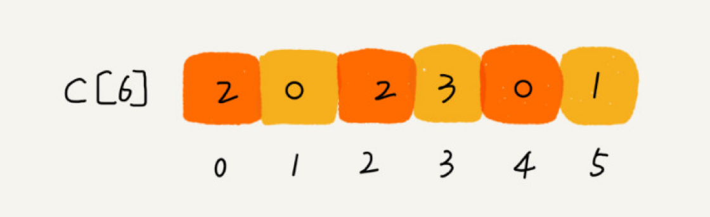
从上图中可以看出：
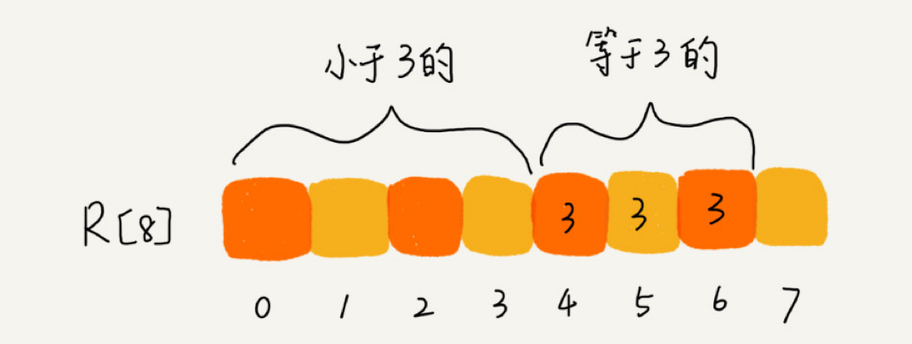
关键问题：如何计算位置？
如何快速计算出,每个分数的考生在有序数组中对应的存储位置呢?
我们对C[6]数组顺序求和,C[6]存储的数据就变成了下面这样子。C[k]里存储小于等于分数k的考生个数，如下图所示：
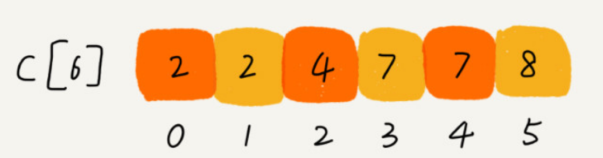
我们从后到前依次扫描数组 A。比如，当扫描到 3 时，我们可以从数组 C 中取出下标为 3的值 7，也就是说，到目前为止，包括自己在内，分数小于等于 3 的考生有 7 个，也就是说 3 是数组 R 中的第 7 个元素（也就是数组 R 中下标为 6 的位置）。当 3 放入到数组 R中后，小于等于 3 的元素就只剩下了 6 个了，所以相应的 C[3] 要减 1，变成 6。
以此类推，当我们扫描到第 2 个分数为 3 的考生的时候，就会把它放入数组 R 中的第 6 个元素的位置（也就是下标为 5 的位置）。当我们扫描完整个数组 A 后，数组 R 内的数据就是按照分数从小到大有序排列的了。
1 | // 计数排序，a 是数组，n 是数组大小。假设数组中存储的都是非负整数。 |
总结
计数排序只能用在数据范围不大的场景中，如果数据范围 k 比要排序的数据n 大很多，就不适合用计数排序了。而且，计数排序只能给非负整数排序，如果要排序的数据是其他类型的，要将其在不改变相对大小的情况下，转化为非负整数。
比如，还是拿考生这个例子。如果考生成绩精确到小数后一位，我们就需要将所有的分数都先乘以 10，转化成整数，然后再放到 9010 个桶内。再比如，如果要排序的数据中有负数，数据的范围是 [-1000, 1000]，那我们就需要先对每个数据都加 1000，转化成非负整数。
基数排序( Radix sort)
假设我们有10万个手机号码,希望将这10万个手机号码从小到大排序,你有什么比较快速的排序方法呢?
这里按照每位来排序的排序算法要是稳定的,否则这个实现思路就是不正确的。因为如如果是非稳定排序算法,那最后一次排序只会考虑最高位的大小顺序,完全不管其他位的大小关系,那么低位的排序就完全没有意义了。
有时候要排序的数据并不都是等长的
实际上,我们可以把所有的单词补齐到相同长度,位数不够的可以在后面补“0”,因为根据ASCI值,所有字母都大于“0”,所以补“0”不会影响到原有的大小顺序。这样就可以继续用基数排序了
基数排序对要排序的数据是有要求的,需要可以分割出独立的“位”来比较,而且位之间有递进的关系,如果a数据的高位比b数据大,那剩下的低位就不用比较了。除此之外,每一位的数据范围不能太大,要可以用线性排序算法来排序,否则,基数排序的时间复杂度就无法做到O(n)了。
排序优化
如何实现一个通用的、高性能的排序函数？
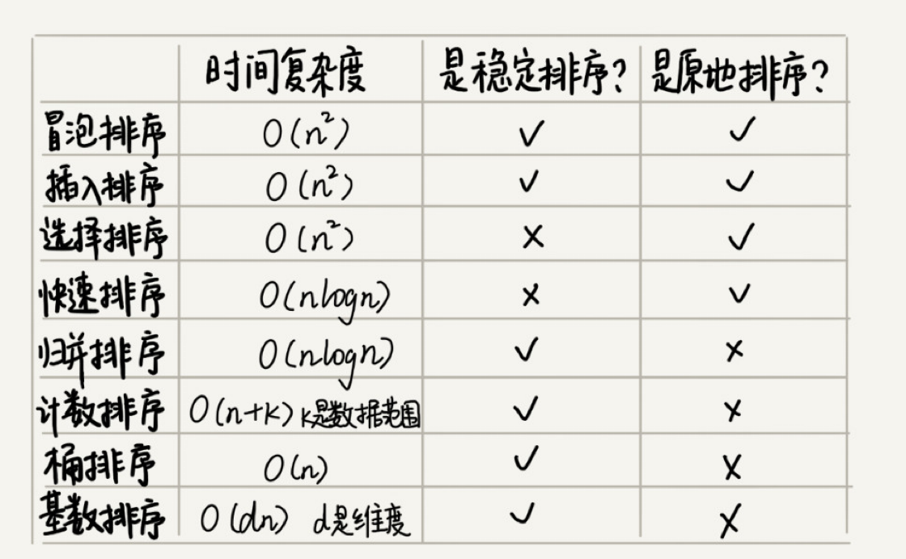
为了兼顾任意规模数据的排序, 一般都会首选时间复杂度是 O(nlogn) 的排序算法来实现排序函数。
快速排序在最坏情况下的时间复杂度是 O(n ),如何来解决这个“复杂度恶化”的问题呢?
如何优化快速排序?
每次分区点都选择最后一个数据,那快速排序算法就会变得非常糟糕,时间复杂度就会退化为 O(n )。实际上,这种 O(n ) 时间复杂度出现的主要原因还是因为我们分区点选的不够合理。
最理想的分区点是:被分区点分开的两个分区中,数据的数量差不多。
- 三数取中法
我们从区间的首、尾、中间,分别取出一个数,然后对比大小,取这 3 个数的中间值作为分区点。 - 随机法
随机法就是每次从要排序的区间中,随机选择一个元素作为分区点。
递归要警惕堆栈溢出。为了避免快速排序里,递归过深而堆栈过小,导致堆栈溢出,我们有两种解决办法:第一种是限制递归深度。一旦递归过深,超过了我们事先设定的阈值,就停止递归。第二种是通过在堆上模拟实现一个函数调用栈,手动模拟递归压栈、出栈的过程,这样就没有了系统栈大小的限制。
举例分析排序函数
Glibc 中的 qsort() 函数举例
- qsort() 会优先使用归并排序来排序输入数据
- 要排序的数据量比较大的时候,qsort() 会改为用快速排序算法来排序。
- 提到的递归太深会导致堆栈溢出的问题,qsort() 是通过自己实现一个堆上的栈,手动模拟递归来解决的
- 用到了插入排序。在快速排序的过程中,当要排序的区间中,元素的个数小于等于 4 时,qsort() 就退化为插入排序,不再继续用递归来做快速排序,
实战
实战总结篇，限于本文篇幅可能会过长，该部分参见个人另一篇博客中的具体实战讨论细节
传送门：极客时间-数据结构与算法-实战篇